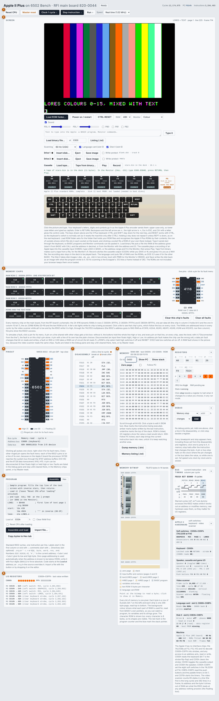
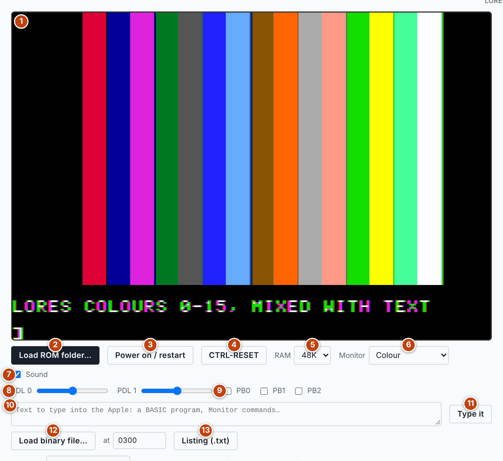
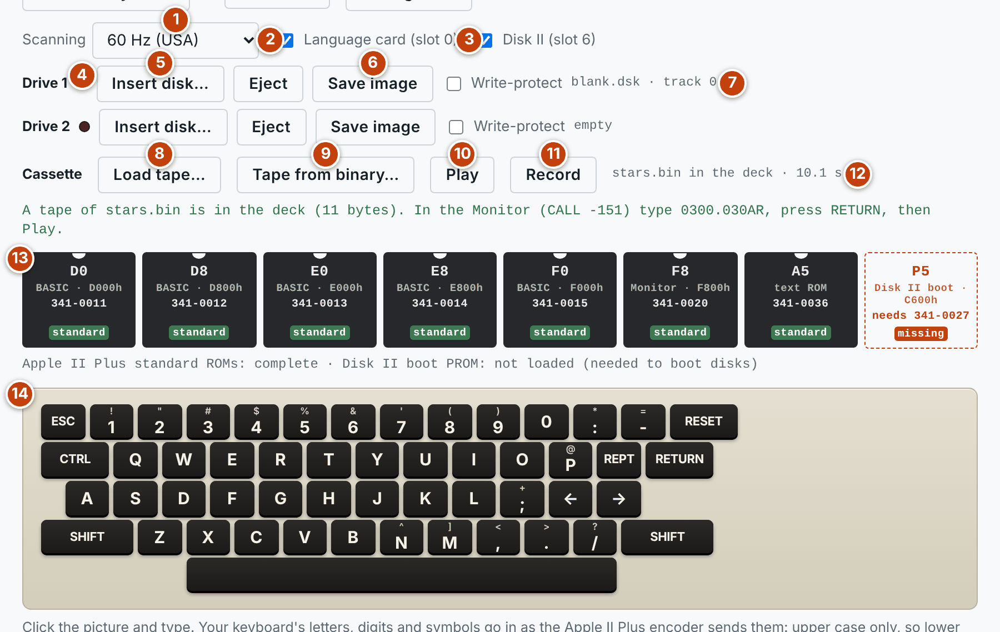
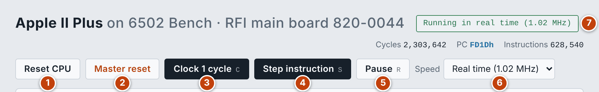
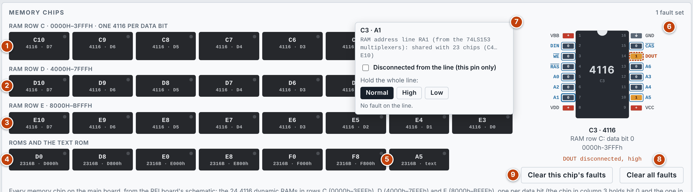
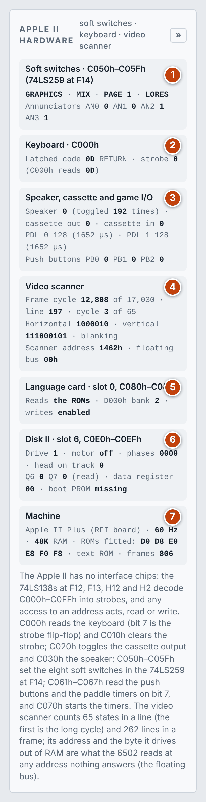
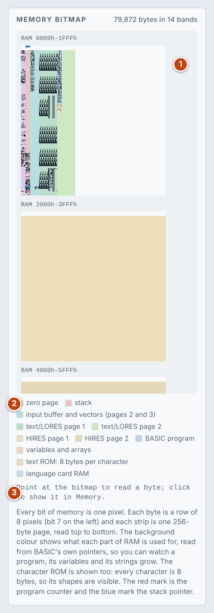

]LIST
Apple II Plus documentation
How to use the emulator, and how the machine it models is put together. The numbers in each list match the numbered markers on the screenshot above it.
User guide
The emulator is 6502 Bench with an Apple II Plus built around the CPU. Everything 6502 Bench does still works here; this guide covers what the machine adds, and points to the 6502 Bench documentation for the shared debugging tools.
Quick start
- Press Load ROM folder… and choose the folder that holds your Apple II Plus ROM images: the six 2K system ROMs (341-0011 to 341-0015 and 341-0020) and the 2K text ROM (341-0036), or one 12K file of D000h–FFFFh. The ROMs are not included. They are recognised by their contents, whatever the files are called, and your browser keeps them for next time.
- The Apple switches on, beeps and shows
APPLE ][and the]prompt of Applesoft BASIC. - Click the picture and type, for example
PRINT 6*7and Enter. Or paste a program into the box under the screen and press Type it. - For disks, put the card's boot PROM in the ROM folder too (see Using the Disk II), tick Disk II (slot 6) and insert a disk image: the Apple boots it, as a real one with the card does at power on.
The page

- Toolbar: reset, stepping and speed (Running and stepping).
- Screen: the picture, its controls, the cards, the cassette, the ROM sockets and the keyboard.
- Memory chips: every memory chip, with live pins and faults.
- Pinout: the 6502's 40 pins.
- Program: assembly or hex to load into memory.
- I/O registers: the last value written to each address in C000h–C0FFh, and a log of the accesses (the keyboard's own reads at C000h–C00Fh are left out, because a program waiting for a key reads it thousands of times a second).
- Disassembly and breakpoints.
- Memory: the hex view.
- Memory bitmap (below).
- Registers and register stops.
- Debug: breakpoints, stops and faults.
- Bus timing: each cycle of the current instruction.
- Apple II hardware (below).
The screen and its controls

- The picture: 280 × 192 as the Apple draws it, here LORES with the four lines of text of MIXED mode. Click it to give it the keyboard. The line above the screen shows the mode, the page, the line being drawn and the frame count.
- Load ROM folder…: as in the quick start. ROM files… beside it takes the files themselves instead: select them all at once in the file box (Ctrl-A, or Cmd-A on a Mac). Use it if your browser will not let you pick the folder; on an iPad or a phone, which cannot pick folders, the main button picks files. On an iPhone or iPad, pick files kept on the device or in iCloud Drive: files in a OneDrive folder may not be offered until they have been copied there. You can also drop the ROM files on this panel. A 256-byte file that is the Disk II's boot PROM is taken too, also when it holds the chip as it is wired on the card (below).
- Power on / restart: switches the Apple off and on: RAM is cleared and the Autostart ROM starts from cold.
- CTRL-RESET: pulls the RESET line low, as CTRL and RESET together do on the keyboard. The program restarts through the reset vector; memory and the soft switches are kept.
- RAM: 16K, 32K or 48K: one, two or three rows of 4116s. Changing it switches the Apple off and on.
- Monitor: Colour shows the colours the Apple makes from the dot pattern; Black and white, Green and Amber show the dots alone, as a monochrome monitor does.
- Sound: the speaker. It starts once you click or type on the page, as browsers ask.
- PDL 0 and PDL 1: the two paddles, as 150K potentiometers. The Applesoft function
PDL(0)reads about 0 to 255 across the slider. - PB0, PB1 and PB2: the push buttons (on a paddle pair, PB0 and PB1 are the paddles' buttons).
PEEK(49249)is 128 or more while PB0 is down. - Text to type: a BASIC program, Monitor commands, anything you would type.
- Type it: types the text into the keyboard, one key at a time, each as soon as the program has read the last, so nothing is lost. Lower case letters go in as capitals, as the II Plus keyboard sends them.
- Load binary file…: puts a file into RAM at the address in the box beside it (hexadecimal). Start it from BASIC with
CALLand the address in decimal (CALL 768for 0300h), or from the Monitor with the address andG. - Listing (.txt): saves a text file with the registers, the soft switches, Applesoft's pointers, the BASIC program as text, the text screen and a hex dump of RAM.
Cards, drives, cassette, ROMs and keyboard

- Scanning: 60 Hz (USA), or 50 Hz (Eurapple): the European Apple's 312 lines a frame (Timing). Changing it, or a card, switches the Apple off and on, as fitting a card would.
- Language card (slot 0): 16K of RAM over the ROMs (Language card).
- Disk II (slot 6): the disk controller card and its two drives.
- IN USE light: lit while that drive is selected and its motor runs.
- Insert disk…: a disk image:
.dskor.do(DOS 3.3 sector order),.po(ProDOS order) or.nib(raw tracks). Eject takes it out; if the disk has been written to, it asks first. - Save image: writes the disk as an image file, with what programs wrote to it, in the order it came in (
.postays ProDOS order). Write-protect beside it is the notch on the disk: a protected disk cannot be written. - What is in the drive, the track the head is on, and whether it has been written to.
- Load tape…: a recording of an Apple tape: a WAV file, or any audio file your browser can decode. It goes into the deck ready to play.
- Tape from binary…: makes a tape in the Monitor's format from a file, to be read with the Monitor's
Rcommand; the address it loads at is the one in the box beside Load binary file…. - Play / Stop: plays the tape into the cassette input.
- Record / Stop recording: records the cassette output while you SAVE or use the Monitor's
W. Stopping saves it as a WAV file and puts the recording in the deck, so it can be played straight back. - The deck: what is in it, and how far it has played.
- ROM sockets: what sits in each socket of the board, and the Disk II card's boot PROM (P5). A socket shows standard when it holds the Apple II Plus ROM, your ROM when you have fitted one of your own, and missing when it is empty. Click a socket to fit a ROM file of your own there: a 2K image (a 2316B or a 2716 EPROM), or 256 bytes for P5; a shorter file is repeated to fill the socket. remove takes it out again.
- Keyboard: the II Plus keyboard (Keyboard). CTRL and SHIFT stay down for the next key; RESET resets the machine only after CTRL, as the keyboard's switch is normally set; while REPT is down, holding a key repeats it ten times a second.
Typing on your own keyboard: letters, digits and symbols go in by character (upper case only), Enter is RETURN, Backspace and the left arrow are ←, the right arrow is →, Esc is ESC, and Ctrl with a letter gives the control code (Ctrl-C, Ctrl-G and so on). A held key does not repeat unless REPT is down, as on the real keyboard.
Using the cassette
- Loading a BASIC program from a recording: press Load tape… and choose the recording, type
LOADand Enter, then press Play. Applesoft beeps when it has read the header and again at the end; typeLISTorRUN. - Loading machine code: enter the Monitor with
CALL -151, type the address range andR(for example0300.03FFR) and Enter, then press Play. With Tape from binary… the message gives the range to type. - Saving: press Record, type
SAVE(or the range andWin the Monitor) and Enter, and press Stop recording when the prompt comes back. - A tape starts with ten seconds of header tone, so loading takes as long as on the real machine; choose Full speed to make it quicker.
Using the Disk II
- The boot PROM: the card's 256-byte boot PROM (P5, 341-0027, the 16-sector one) is Apple's code and is not included. Put your copy in the ROM folder and load the folder again, or click the P5 socket and choose the file. Some copies hold the chip as it is wired on the card, with address lines A5 and A7 swapped and data bits 4–7 in reverse order; the emulator recognises these and puts the bytes back in the order the 6502 reads them (the result is the standard 341-0027, CRC CE7144F6).
- Booting: with the card fitted, the Autostart ROM looks for a disk controller at power on and boots drive 1, as on the real machine. With no disk in the drive it waits there with the motor running: insert a disk and it boots, or press CTRL-RESET for BASIC. To boot again later, type
PR#6in BASIC (orC600Gin the Monitor). A DOS 3.3 disk loads DOS and runs its greeting program; with the language card fitted, the System Master also loads Integer BASIC into it, andINTandFPswitch between the two BASICs. - Keeping what you wrote: programs that write to the disk (SAVE, INIT, file copies) change the disk image in memory; Save image gives it to you as a file.
- Copy-protected disks may not boot: see Disk II.
Running and stepping

- Reset CPU: the RESET line, as CTRL-RESET.
- Master reset: also forgets the ROMs (load them again to switch on) and clears memory, breakpoints, stops and faults. It asks for a second click.
- Clock 1 cycle (C): one clock, which is one bus cycle.
- Step instruction (S)
- Run / Pause (R). The keyboard shortcuts work when the picture does not have the keyboard. While paused or stepping, the picture shows the lines drawn so far in the current frame over the last whole frame, so you can see where the scanner is.
- Speed: Real time (1.02 MHz) runs at the Apple's own speed. Full speed runs as fast as your computer allows. The slow clock rates let you watch the pins change.
- Status: what the machine is doing, or what halted it.
Memory chips and fault simulation

- RAM row C (0000h–3FFFh): eight 4116s, one per data bit; the chip in column 10 holds bit 7 and the one in column 3 bit 0.
- RAM row D (4000h–7FFFh), shown with 32K or more.
- RAM row E (8000h–BFFFh), shown with 48K.
- The ROMs D0–F8, each 2K. A dot lights while a chip is being accessed.
- The text ROM at A5: it is read by the video generator, not by the 6502.
- The selected chip with its pins, which follow the bus on every clock. The 4116s show the 6502's access (the column address, as CAS falls last).
- A pin's menu: a pin on a line shared with other chips gets a tick box. Without it, the buttons hold the whole line high or low, and every pin on that line, on every chip, sees the level; with it (Disconnected from the line), the fault is on this chip's pin alone.
- The faults set on this chip. Here C3's data output is disconnected and floats high, so bit 0 of every byte in row C reads 1: the text on the screen changes (spaces become
!) because the video reads the same chip. - Clear this chip's faults and Clear all faults. Faults are also listed in the Debug pane and stay until cleared there, here, or by Master reset.
What a fault does: an address pin fault makes the chip use the wrong cell; a data pin fault changes that bit on reads and writes; a fault on RAS or CAS takes a RAM out of circuit (its bit reads 1); a ROM's chip select held high switches it off, and INHIBIT' (CS2) held low switches all six off, which stops the Apple. The 6502's own pins take faults from the Pinout panel; on the Apple each of them is on a line of its own, because the processor reaches the system bus through buffers (Memory chips).
Apple II hardware panel

- Soft switches: GRAPHICS or TEXT, MIX, PAGE 1 or 2, LORES or HIRES, and the four annunciators.
- Keyboard: the code in the encoder's latch, the strobe flip-flop, what C000h reads, and how many keys are waiting from Type it.
- Speaker, cassette and game I/O: the speaker flip-flop and how often it has been toggled, the cassette output and input, the paddles (their setting and the timer's pulse) and the push buttons.
- Video scanner: where the scanner is in the frame (cycle, line, the long cycle), its horizontal and vertical counts in binary, whether it is in the picture or blanking, the address it is reading and the byte it drives out: the floating bus.
- Language card (when fitted): whether reads go to its RAM or the ROMs, the D000h bank, and whether writes are enabled.
- Disk II (when fitted): the drive selected, the motor (which runs on for a second after it is switched off), the stepper phases, the head's track, Q6 and Q7 and the mode they select, the data register, the boot PROM, and how many nibbles have been written.
- Machine: the scanning, the RAM, the ROMs fitted and the frame count.
Memory bitmap

- The bands: every bit of memory as a pixel, a byte to a row of eight and a 256-byte page to a column: RAM in 8K bands, each ROM that is fitted, the Disk II boot PROM, the language card's RAM and the text ROM (every character is 8 bytes, so its shapes are visible). Here the text page and the LORES picture are in the first band.
- The legend: the tints show what each part of RAM is used for: zero page, stack, the input buffer and vectors, the text and HIRES pages, and, from Applesoft's own pointers, the BASIC program, its variables and arrays, and its strings.
- Reading a byte: point at the bitmap to read the byte under the pointer; click to show it in Memory.
The debugging tools
The remaining panels are 6502 Bench's own and work the same way here.
- Pinout: as described there, except that the input pins open the fault menu here instead of toggling
- Loading a program: the sample program loads at
0300h, the usual home for short machine-code routines; start it from BASIC withCALL 768 - Disassembly and breakpoints
- Memory
- Registers and register stops
- Debug pane: memory, pin and bus stops
- Bus timing: including the dummy cycles, which matter on the Apple: a dummy read of C030h toggles the speaker, and one of C0E0h–C0EFh moves the disk
Hardware reference
What the emulator models, and how. It follows the RFI revision of the main board (Apple 820-0044), the last of the II Plus boards, which takes only 16K RAM chips.
The machine
The Apple II has no interface chips. A 6502 (H7/8) runs at 1.02 MHz from a 14.31818 MHz crystal, and a few dozen TTL chips do the rest: they divide the clock, scan the video, multiplex the RAM between the processor and the video, decode the I/O addresses into strobes, and hold the soft switches. The 6502 reaches the system bus through 8T97 address buffers (H3–H5) and 8T28 data transceivers (H10, H11), so the cards in the slots see the same bus as the main board.
Memory map
| Addresses | What |
|---|---|
| 0000h–3FFFh | RAM row C (always fitted). Text/LORES page 1 is 0400h–07FFh, page 2 0800h–0BFFh; HIRES page 1 is 2000h–3FFFh |
| 4000h–7FFFh | RAM row D (32K and 48K). HIRES page 2 is 4000h–5FFFh |
| 8000h–BFFFh | RAM row E (48K) |
| C000h–C07Fh | I/O strobes and soft switches (below) |
| C080h–C0FFh | Device selects of slots 0–7, 16 addresses each: the language card at C080h–C08Fh, the Disk II at C0E0h–C0EFh |
| C100h–C7FFh | I/O selects of slots 1–7, 256 bytes each: the Disk II's boot PROM at C600h–C6FFh |
| C800h–CFFFh | Expansion ROM space of the cards (none here) |
| D000h–F7FFh | Applesoft BASIC: ROMs D0, D8, E0, E8 and F0 (341-0011 to 341-0015) |
| F800h–FFFFh | The Autostart Monitor: ROM F8 (341-0020), with the reset vector at FFFCh |
An address in a missing RAM row, an empty socket, an empty slot or an I/O strobe reads the floating bus (below).
I/O and soft switches
The 74LS138 decoders at F12, F13, H12 and H2 turn C000h–C0FFh into strobes. Any access to an address acts, read or write, because R/W is not part of the decoding; so a write to C030h toggles the speaker too, and so does a dummy read the 6502 makes during an indexed instruction.
| Address | What it does |
|---|---|
| C000h–C00Fh | Reads the keyboard: the 7-bit code, with the strobe flip-flop on bit 7 |
| C010h–C01Fh | Clears the keyboard strobe |
| C020h–C02Fh | Toggles the cassette output |
| C030h–C03Fh | Toggles the speaker |
| C040h–C04Fh | C040 STROBE' on the game connector |
| C050h / C051h | GRAPHICS / TEXT |
| C052h / C053h | NOMIX / MIX (four lines of text under graphics) |
| C054h / C055h | PAGE 1 / PAGE 2 |
| C056h / C057h | LORES / HIRES |
| C058h–C05Fh | Annunciators AN0–AN3 low (even) / high (odd) |
| C060h, C068h | Bit 7: the cassette input |
| C061h–C063h | Bit 7: push buttons PB0–PB2 (1 while pressed) |
| C064h–C067h | Bit 7: paddle timers 0–3 (1 while timing) |
| C070h–C07Fh | Starts the four paddle timers |
The eight soft switches are the 74LS259 addressable latch at F14. Reads of C060h–C067h drive bit 7 only; the other bits are the floating bus.
Timing and the video scanner
- Clocks: the 14.31818 MHz master clock gives the 7M dot clock, the 3.58 MHz colour reference and the processor clock. A normal cycle is 14 periods of the master clock; every 65th, the long cycle, is 16, which keeps the colour reference in step from line to line. A line is 65 cycles (912 periods), a frame 262 lines, 17,030 cycles: 59.92 frames a second, and an average of 1,020,484 cycles a second.
- The scanner: the horizontal counter counts 0000000, then 1000000 to 1111111 (65 states; the first is the long cycle), and the picture is shown from 1011000 on, for 40 states. The vertical counter counts 011111010 to 111111111 (262 states): lines 0–191 carry the picture, 192–261 are vertical blanking, with the sync on lines 224–227.
- Its addresses: A0–A2 are H0–H2; A3–A6 are the 4-bit sum of 1101, H5 H4 H3 and V4 V3 V4 V3 (the scanner's way of fitting 24 rows of 40 bytes into 1K); A7–A9 are V0–V2. In TEXT and LORES, A10 or A11 picks page 1 or 2 and A12 is horizontal blanking; in HIRES, A10–A12 are the line within the row (VA–VC), and A13 or A14 picks the page. MIXED switches to the text addresses for lines 160–191.
- 50 Hz (Eurapple): with the Eurapple jumpers the vertical counter presets to 011001000 instead: 312 lines, 20,280 cycles a frame, 50.32 frames a second. The 50 extra lines all go to vertical blanking; the picture is the same 192 lines.
Video generation
The emulator generates the picture one cycle at a time: for each of the 40 cycles of a line that carry picture, it reads the byte at the scanner's address, with the soft switches as they are at that moment, and turns it into 14 dots of the 14 MHz clock. A program that switches modes or writes to the screen in the middle of a frame shows the change from the line where it happens.
- TEXT: the byte addresses the text ROM (a 2316B on the RFI board) with the line in the row; the ROM's bits 6–0 are seven dots, each two periods of 14 MHz. Bytes 00h–3Fh are inverse, 40h–7Fh flash (inverse half the time, from the flasher: about four changes a second), 80h–FFh are normal.
- LORES: each byte is two blocks of four lines, the low nibble on top; the nibble's pattern is repeated at 14 MHz, so dot x shows bit (x mod 4) of the colour number.
- HIRES: bits 0–6 are seven dots of two periods each, left to right; bit 7 delays the byte by one period of 14 MHz (half a dot), which is how the second pair of HIRES colours comes about.
- Colour: the Apple makes colour from the dot pattern itself: a monitor sees a pattern that repeats every four periods of 14 MHz as a colour, set by its phase against the colour burst. The emulator gives each dot the colour of the four dots around it, read in the colour reference's phase, which is a LORES colour number; so LORES shows its 16 colours, HIRES its green, violet, orange and blue with the fringes of the real thing, and text in MIXED mode has colour fringes too. In TEXT mode the burst is switched off (the colour killer), so the monitor shows white.
The floating bus
The RAM is read twice in every cycle: by the video scanner while φ0 is low, then by the 6502. When the 6502 reads an address that nothing answers, nothing drives the data bus in its half of the cycle, and the bus still holds the byte the scanner just read: the 6502 reads that. The emulator does the same, at every address that nothing answers, so a program can tell where the scanner is by reading it, as some games do to change the screen without flicker.
Keyboard and game I/O
- Keyboard: the II Plus keyboard has its own encoder (an AY-5-3600), which latches a 7-bit code and sets the strobe flip-flop read on bit 7 of C000h. Letters are upper case with or without SHIFT, except that SHIFT-N, SHIFT-M and SHIFT-P give
^,]and@; CTRL with a key whose code is 40h–5Fh gives that code less 40h. REPT held with a key repeats it ten times a second. RESET pulls the 6502's RESET line low; the keyboard has a switch that makes it need CTRL as well, and the emulator works as with that switch set. - Paddles: each paddle is a 150K potentiometer on one timer of the 558 quad timer. An access to C070h–C07Fh starts all four; each reads 1 on bit 7 for (R + 100) × 0.022 microseconds, from 2 µs to about 3.3 ms, and the Monitor's PREAD counts how long.
- Push buttons PB0–PB2 and the annunciators AN0–AN3 are on the game connector.
Cassette
The cassette output is a flip-flop toggled by C020h, the input a comparator read on bit 7 of C060h. The Monitor's tape format, as its W writes it and R reads it, timed in cycles of the 6502: a header of half cycles of 650 cycles (770 Hz; ten seconds of it), a sync bit (a half cycle of 200 then one of 250), then each byte from bit 7 down, a 0 bit as two half cycles of 250 cycles and a 1 bit as two of 500, and last a checksum: FFh exclusive-ored with every byte. Applesoft's SAVE writes two such records: the program's length, then the program. The emulator plays a recording into the input by turning it into the times at which the signal changes polarity, and records the output the same way. Checked: the Monitor's W read back with R, a tape made from bytes read with R, the same through a WAV file, and Applesoft's SAVE and LOAD.
Language card
Apple's 16K RAM card, in slot 0, puts RAM over the ROMs: two 4K banks at D000h–DFFFh and 8K at E000h–FFFFh. Its switches are C080h–C08Fh: bit 3 picks bank 1 (set) or bank 2; bits 0 and 1 both clear or both set read the RAM, otherwise the ROMs; two reads in a row of an odd address enable writing to the RAM, and an access to an even address disables it. While it reads its RAM, it pulls INHIBIT' low to switch the main board's ROMs off. After RESET it reads the ROMs and writes to bank 2. DOS 3.3 loads the other BASIC into it.
Disk II
- The card in slot 6 answers at C0E0h–C0EFh: C0E0h–C0E7h turn the four stepper phases off and on, C0E8h/C0E9h the motor, C0EAh/C0EBh select drive 1 or 2, C0ECh/C0EDh set Q6 and C0EEh/C0EFh Q7. With Q7 and Q6 low it reads the disk; Q6 high senses write protect; Q7 and Q6 high load the data register; Q7 high and Q6 low shift it onto the disk. Its boot PROM (P5) is at C600h–C6FFh.
- The drive: a phase turned on pulls the head half a track towards it, so stepping the phases in turn moves the head. The motor runs on for about a second after it is switched off.
- The disk: each of its 35 tracks is held as a ring of nibbles, made from the image as DOS 3.3 formats a disk: gaps of FFh sync bytes, then for each of the 16 sectors an address field (D5 AA 96, the volume, track, sector and checksum in 4-and-4 code, DE AA EB) and a data field (D5 AA AD, the 256 bytes in 6-and-2 code with their checksum, DE AA EB).
.nibimages are taken as they are. - Reading and writing: the disk turns under the head at its real rate, one nibble every 32 cycles. A read returns the nibble under the head once, with bit 7 set, as the card's logic state sequencer leaves it in the data register; a second read before the next nibble arrives sees bit 7 clear. Writing puts each nibble after the last, from where the head was when writing began. Save image decodes the tracks back into sectors.
- Checked: the real boot PROM boots a test disk, as a
.dskand as a.po, at power on and withC600G, loading its sectors in DOS 3.3's order. The DOS 3.3 System Master (August 1980) boots, with and without the language card;CATALOG,SAVE,LOAD,RUN,INTandFPwork and its demonstration programs run; and the disk saved with Save image after aSAVEboots again with the new program on it. ProDOS has not been tried yet. - Not modelled: the logic state sequencer (the P6 PROM) bit by bit, so its PROM is not needed. The boot PROM and the DOS 3.3 format work; copy protections that count bits, use half tracks or time the gaps between nibbles may not.
Memory chips
- RAM: 24 4116 dynamic RAMs (16K × 1) in rows C, D and E; in each row the chip in column n + 3 holds data bit n. The 74LS153 multiplexers put the 6502's address on the RAMs' seven address lines RA0–RA6, row then column, as A7/A10, A2/A4, A0/A5, A8/A11, A3/A9, A1/A6 and A12/A13. The video scanner reads the same chips, so a RAM fault shows in the picture.
- ROMs: six 2316B (2K) mask ROMs. Each has its own ROM ENABLE' from the 74LS138 at F12 on its CS1 pin; their CS2 pins share INHIBIT' from the slots, pulled up on the board.
- The text ROM at A5: a 2316B on the RFI board, addressed by the row within the character (VA–VC), the character code (DL0–DL5) and, on its A9 and A10, DL6 and DL7.
- The 6502: its pins take faults from the Pinout panel. Each is on a line of its own, since the buffers stand between it and the bus.
What is not emulated
- The Disk II's logic state sequencer bit by bit (see above), and other cards: printers, serial cards, 80-column cards, clocks.
- The mode switching delay: on the board a switch between TEXT and graphics takes effect a little over a cycle later; here it takes effect at the cycle of the access.
- The analogue video: the colours are worked out from the dot pattern, not by decoding an NTSC signal; on a 50 Hz Apple they are shown as an NTSC monitor would show them.
- Power-on contents of RAM: RAM starts as zeros.
Sources
- Jim Sather, Understanding the Apple II, Quality Software, 1983: the timing, the video scanner and its addresses, the video generator, the address decoding, the RAM multiplexing and the game I/O.
- Apple II Reference Manual, Apple, 1979 (and the January 1978 edition): the memory map, the soft switches, the Monitor and the cassette.
- Apple's addendum to the Apple II Reference Manual for the RFI main board, with its schematic.
- Winston D. Gayler, The Apple II Circuit Description, Howard W. Sams, 1983.
- Further reading: faddenSoft's 6502bench, an open-source workbench for the 65xx processors (Windows) with SourceGen, an interactive disassembler that has been used on Apple II software; its companion site 6502disassembly.com has examples of finished disassemblies. It is a separate project, unrelated to this emulator and to 6502 Bench despite the similar name.